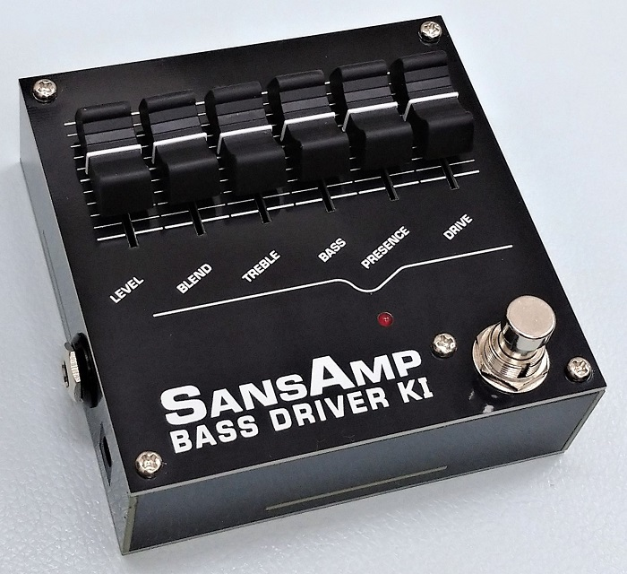
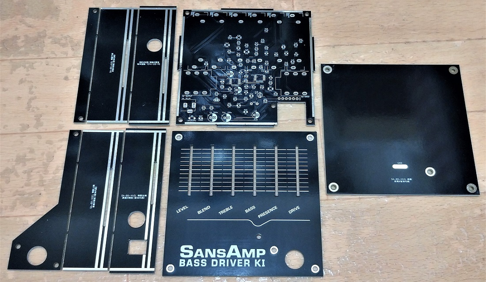
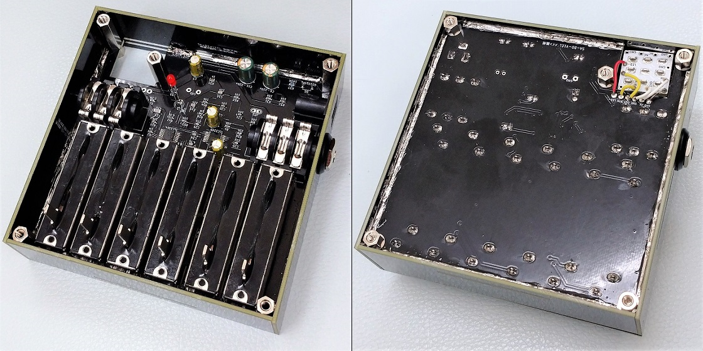
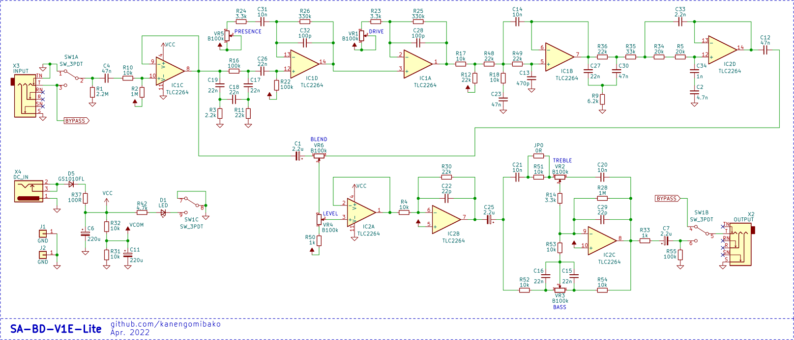

Tech 21 SansAmp Bass Driver DI V1E Lite
2022年05月23日 カテゴリー：自作エフェクター（アナログ）

Tech 21 SansAmp Bass Driver DI （以下BDDI）の解析を終え、自分用にシンプルなものがあるといいかなと思い製作しました。見た目のインパクトを考え、以前製作したRATのようにスライドボリュームを使っています。

本体は、半田付けやネジ止めで接続した基板で構成されています。KIという表記はKIBAN（基板）が由来です。基板製造費用が上がらないように10cm四方に納めたかったのですが、Tayda Electronicsにあった小型のスライドボリュームを使うことで何とか実現できました。Elecrowでは基板にスリットを入れても複数デザイン費がかからないので助かっています。後から気付きましたが、側面を嚙み合わせ構造にした方が組み立てやすいです。
スライドボリュームRATはメンテナンス性や耐久性を考えた構造ではありませんでしたが、今回はそのあたりのことも考慮しているので、完成度が上がっています。底板をつけているので、半田付け部分が手に触れることもありません。

六角スペーサーを柱のように使っており、踏んだ時の力が底板に伝わります。筐体部分は強く踏んでも簡単には壊れませんが、残念ながらスライドボリューム自体を保護することはできていません。フットスイッチは基板直付けにすることも可能でしたが、中の基板に力が加わるのを避けるため配線で接続するようにしています（フットスイッチ故障時に交換しやすくなるという利点もあり）。
▽回路図（KiCadデータはGitHubへ）

元になっているのはBDDI V1初期型ですが、DI機能なしでトゥルーバイパス仕様の「Lite」バージョンです。トゥルーバイパスにしたことで発振しやすくなっていますが、よほど高音域を上げるセッティングでなければ問題ないと思います。
BD21 Liteと同じやり方で回路を簡略化しています。出力バッファを省くのと、チューブアンプエミュレーション回路部分の最後のミッドカット回路を前段に移動することにより、オペアンプを2回路分減らしています。そしてローパスフィルタの定数を調整し、元の回路と同じ特性になるようにしています。
BDDI V1E+製作の時と同様、今回もC0G特性の積層セラミックコンデンサ（MLCC）を使っているため、Tech21製BDDIとは少し周波数特性が異なります。後から考えると、実験的に全て高誘電率系MLCCを使ってみるのも面白かったかもしれません。